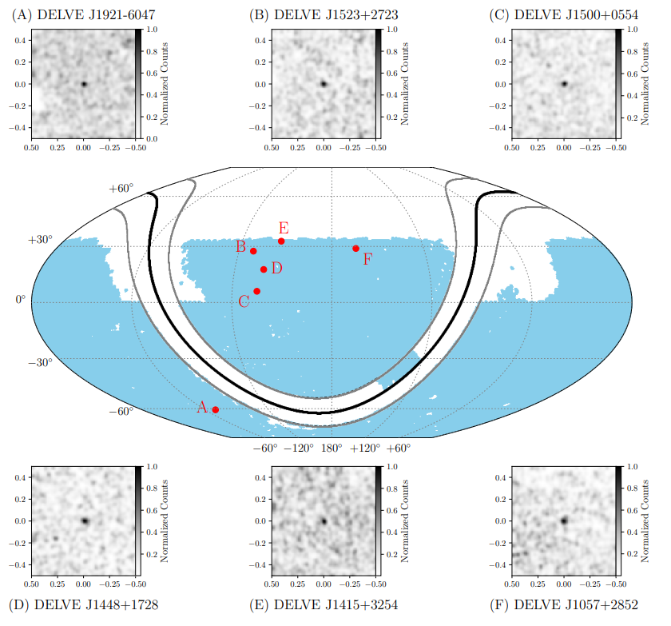
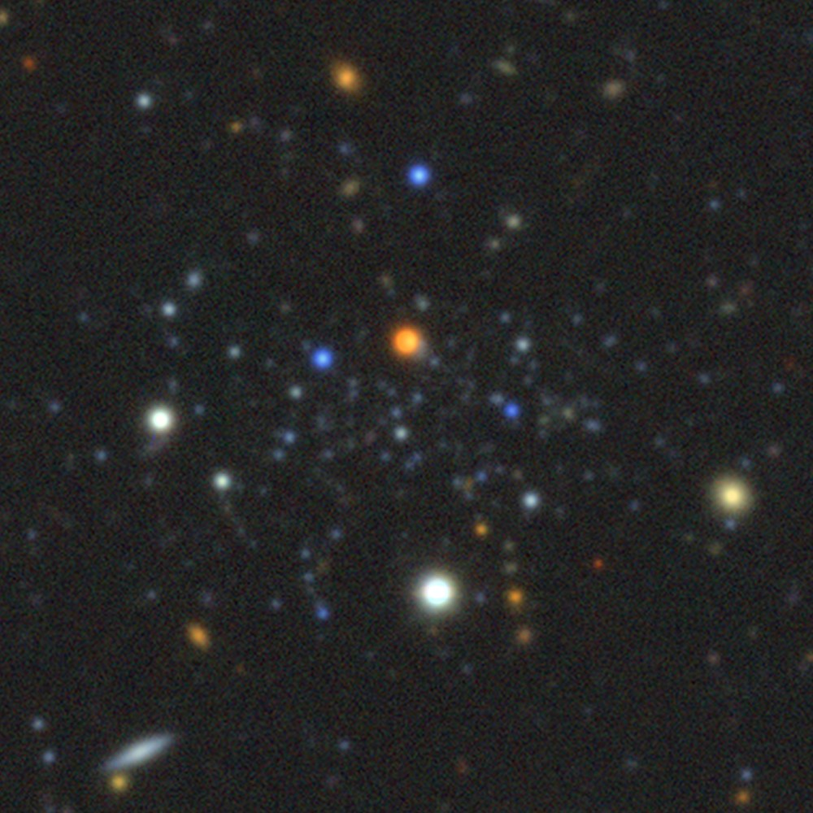

Research

Discovery of Ultra-Faint Dwarf Galaxies and Star Clusters in the Local Universe
As a long-time member of the DECam Local Volume Exploration (DELVE) Survey, I have led searches for the faintest, least-massive galaxies and star clusters orbiting the Milky Way. This collaborative effort has yielded nearly twenty satellite discoveries across the southern sky to date, including several candidates that might represent the least massive galaxies in the universe. Even as we gear up for a new wave of discovery with Rubin, Roman, and Euclid, I remain actively involved with the discovery, deep imaging, and spectroscopic confirmation of new DELVE discoveries.
Example Publications
- Discovery and Spectroscopic Characterization of a Distant, Compact Milky Way Satellite in Gemini
- Discovery and Spectroscopic Confirmation of Aquarius III: A Low-Mass Milky Way Satellite Galaxy
- Six More Ultra-Faint Milky Way Companions Discovered in the DECam Local Volume Exploration Survey
In the News

A Chemodynamical Census of the Milky Way's Ultra-Faint Compact Satellites
Deep, wide-area photometric surveys have uncovered a population of compact (\(r_{1/2} \approx 1\text{–}15\ \mathrm{pc}\)), extremely-low-mass (\(M_* \approx 20\text{–}4000\ M_\odot\)) stellar systems in the Milky Way halo that have very uncertain natures: are they the least-massive dwarf galaxies or unusually chemically-primitive star clusters? I have been leading a large-scale spectroscopic effort with Keck and Magellan to determine these systems' dark matter contents, chemistries, classifications, orbits, and origins.
Example Publications
- A Chemodynamical Census of the Milky Way’s Ultra-Faint Compact Satellites. I. A First Population-Level Look at the Internal Kinematics and Metallicities of 19 Extremely-Low-Mass Halo Stellar Systems
- No Observational Evidence for Dark Matter Nor a Large Metallicity Spread in the Extreme Milky Way Satellite Ursa Major III / UNIONS 1
In the News

The Via Project: Dwarf Galaxy Survey
The 100-night Via Dwarf Galaxy Survey, planned to begin in 2027, will target Milky Way satellite galaxies down to the critical mass threshold of galaxy formation, providing a key spectroscopic complement to the scores of photometric discoveries anticipated from LSST, Euclid, and Roman. Relying on twin new stable, high-resolution, multi-fiber spectrographs for the Magellan and MMT telescopes, Via will directly resolve the velocity dispersions of the faintest galaxies — a task that current instruments are unable to achieve. In tandem, Via will also pursue precision measurements of kinematic perturbations to stellar streams, map cold gas around the Milky Way in sodium absorption, and obtain critical spectroscopic follow-up for transients discovered by Rubin/LSST.
Thus far, I have played a leading role in defining the Dwarf Galaxy Survey science goals and survey strategy, and I eagerly look forward to early science beginning next year!